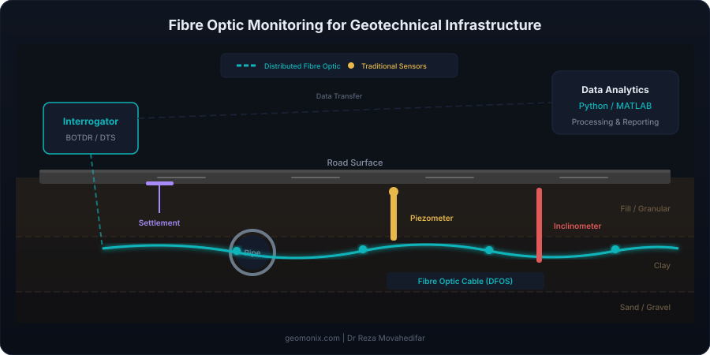

Fibre Optic Sensing for Geotechnical Monitoring: A Practical Guide

Fibre optic sensing is transforming how we monitor infrastructure. But when should you use it instead of traditional instrumentation? This guide breaks down the technology, applications, and practical considerations for engineers and asset managers.
What Is Distributed Fibre Optic Sensing (DFOS)?
Unlike conventional point sensors (such as vibrating wire piezometers or strain gauges) that measure at discrete locations, distributed fibre optic sensing turns the entire length of an optical fibre into a continuous sensor. A single fibre cable can provide thousands of measurement points over distances of several kilometres.
The fibre itself is the sensor — when light travels through an optical fibre, it interacts with the glass material. Changes in temperature, strain, or vibration along the fibre alter the backscattered light signal, which can be analysed to determine precisely where and how much change has occurred.
Three Types of Scattering
DFOS systems exploit three types of light scattering, each suited to different measurements:
| Technology | Scattering Type | Measures | Spatial Resolution | Best For |
|---|---|---|---|---|
| BOTDR/BOTDA | Brillouin | Strain & Temperature | 0.5 – 1.0 m | Long-distance monitoring (pipelines, tunnels, embankments) |
| OFDR | Rayleigh | Strain & Temperature | 1 – 10 mm | High-resolution structural monitoring |
| DTS | Raman | Temperature only | 0.5 – 2.0 m | Leak detection, thermal profiling |
| DAS | Rayleigh (coherent) | Vibration / Acoustic | 1 – 10 m | Seismic monitoring, intrusion detection |
Fibre Bragg Gratings (FBG): The Point Sensor Alternative
Not all fibre optic sensors are distributed. Fibre Bragg Gratings (FBGs) are point sensors inscribed into the fibre at specific locations. Each FBG reflects a particular wavelength of light, which shifts when strain or temperature changes. Multiple FBGs can be multiplexed on a single fibre, typically up to 20–50 sensors per channel.
FBGs are ideal when you need high-accuracy measurements at known critical locations, such as the crown of a tunnel, a structural joint, or a specific section of a pile.
Geotechnical Applications
Fibre optic sensing is particularly valuable in these geotechnical scenarios:
1. Tunnel and Excavation Monitoring
Distributed strain sensing along tunnel linings provides continuous deformation profiles. Unlike discrete convergence pins, DFOS captures localised strain concentrations that might be missed by point measurements — critical for identifying potential failure zones.
2. Pipeline and Buried Infrastructure
Monitoring buried pipelines for ground movement, third-party interference, and leak detection. DTS (distributed temperature sensing) can detect leaks by identifying temperature anomalies along water or gas pipelines. My own research at the University of Birmingham has focused specifically on the interaction between buried pipes, roads, and the surrounding ground.
3. Embankment and Slope Stability
Fibre optic cables installed within or along embankments provide early warning of movement through distributed strain measurement. This is particularly effective for long linear assets like highway embankments and railway cuttings.
4. Pile Monitoring
Instrumenting piles with fibre optics enables continuous load-transfer profiles during load testing, providing far richer data than traditional strain gauges at discrete levels.
5. Centrifuge and Laboratory Testing
Fibre optic sensors are increasingly used in geotechnical centrifuge modelling, where their small size and immunity to electromagnetic interference make them ideal for measuring strain and temperature in scaled physical models. I was awarded a £25,000 ICE Research & Development Enabling Fund specifically for developing fibre optic monitoring in centrifuge geotechnical applications.
When to Use Fibre Optics vs Traditional Sensors
| Scenario | Fibre Optics | Traditional |
|---|---|---|
| Long linear assets (km scale) | Excellent — one cable covers everything | Impractical — too many point sensors needed |
| Harsh environments (EMI, water) | Excellent — immune to electromagnetic interference | May need special protection |
| Simple single-point monitoring | Overkill — expensive interrogator | Better — simple and cost-effective |
| Long-term (10+ years) | Excellent — glass fibre is durable | Good, but drift and corrosion can be issues |
| Budget-constrained small project | High upfront cost (interrogator) | Better — lower capital cost |
| Unknown failure location | Excellent — full spatial coverage | Risk of missing the critical zone |
Practical Considerations
Before specifying fibre optic monitoring for your project, consider these factors:
- Cost structure: The interrogator unit is the major expense (£30k–£150k+). The fibre cable itself is cheap. So DFOS becomes cost-effective when you need many measurement points over long distances.
- Installation: Fibre is fragile during installation. Cable routing, protection, and connection to the interrogator require careful planning.
- Data volume: DFOS generates enormous datasets. You need robust data management and analysis pipelines — this is where Python/MATLAB scripting becomes essential.
- Specialist expertise: Interpreting DFOS data requires understanding of both the sensing physics and the geotechnical context. This is where independent consulting adds real value.
How GeoMonix Can Help
As an independent consultant with hands-on research experience in fibre optic sensing for geotechnical applications, I can help you:
- Determine whether DFOS is the right solution for your project
- Design the monitoring scheme (sensor selection, layout, specifications)
- Review existing monitoring proposals from contractors
- Analyse and interpret monitoring data
- Build automated data processing pipelines